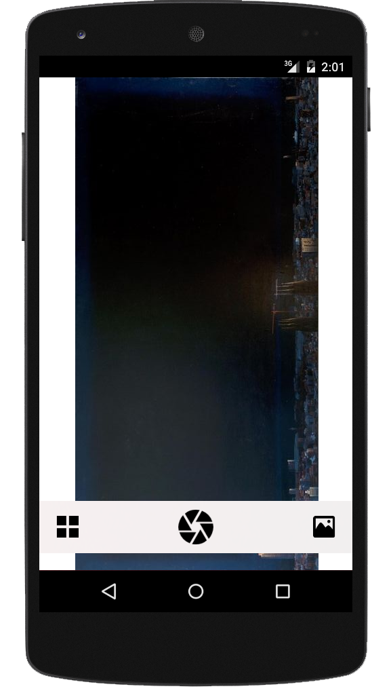
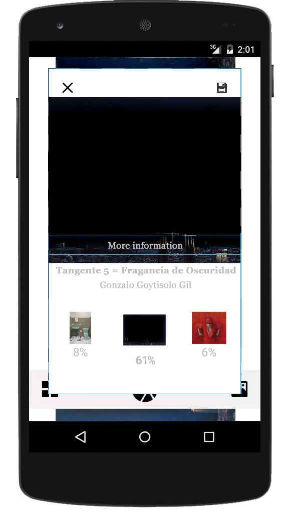

eMuseum
let us recognize that artwork
…simple, intuitive, to the point.
Ever wanted to know an artwork name but didn’t know how? Have you recently gone to a museum and wanted to listen, for free, some information about the exposed artworks? Or even share your feelings with everyone.
Why
Basically
eMuseum rocks.
Nah, let’s get real. We use modern, reliable technology. Works, it is simple and fast.
You will be recognizing artworks in no time, you don’t even need to be on the museum. Our system is so reliable that it will even work by taking photos to images, screens or whatever medium you can think of.
We need your support: we want museums to modernize, to give users, you, a better experience.
usage
How does it work?
As already stated, it is simple and intuitive. All you have to do is:
- Open eMuseum app
-

Once loaded, you will already have the camera on top
- Point at an artwork and press capture button
- Let the magic happen!
Has it already recognized your image?

eMuseum will tell you which is the most likely artwork and the next two more probable, just in case!
Feel free to click and move around.
q/a
Questions and Answers
We will be updating this section as more questions are asked.
- Is eMuseum magic?
- Err… Yes, well no, not really… It’s confidential…
-
No, it is not. We apply certain machine learning algorithms (actually neural networks) to correctly classify images.
Short story long, it works?
- Will it be open source?
- We are considering it, for real. Our old app is already public (eMuseum Github), and this might end up being too.